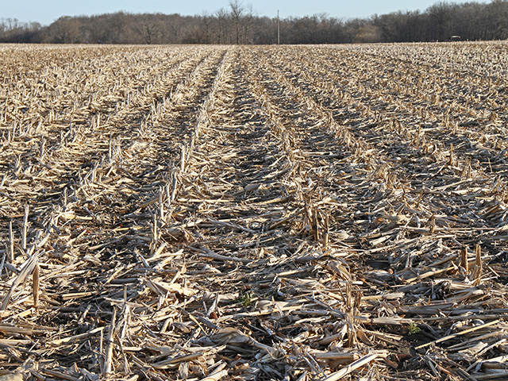
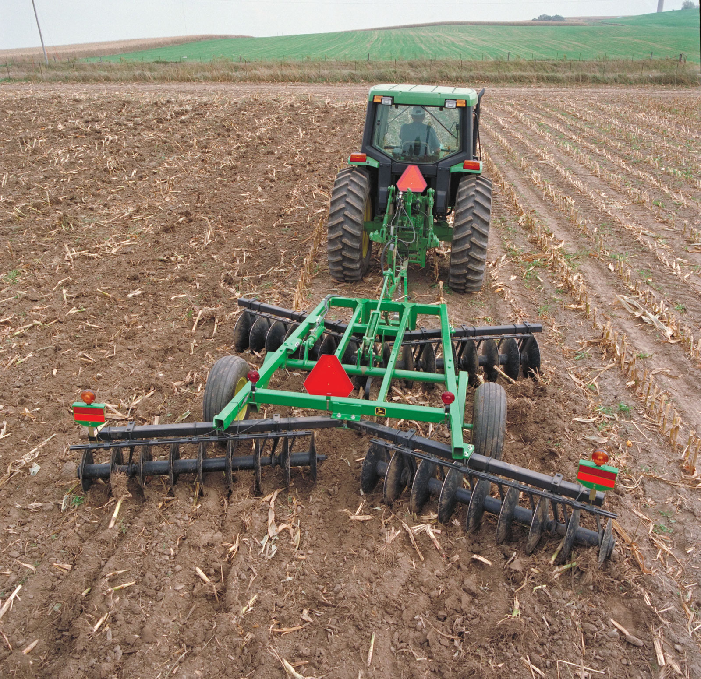
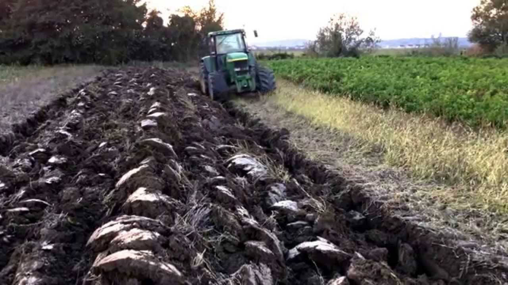

ALL ANSWERS ARE CORRECT!
Tillage means the preparation of land for growing crops, such as turning the soil. Proper tillage mechanisms hold as one of the most sustainable ways of avoiding soil quality decline.
This is otherwise known as conservation tillage, which means tillage mechanisms targeted at making very minimal changes to the soil's natural condition and at the same
time improving the soil's productivity. It creates a suitable soil environment for growing crop and that conserves soil,
water and energy resources mainly throught the reduction in the intensity of tillage, and retention of plant residues.
Examples include leaving the previous year's crop residue on the surface to shield the soil from erosion and
avoiding poor tillage methods such as deep plowing.

Leaving crop residue on the surface

Plowing land for growing crops

Deep plowing is plowing to a depth greater than 50cm compared to ordinary plowing which is 20cm.
×